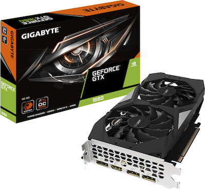
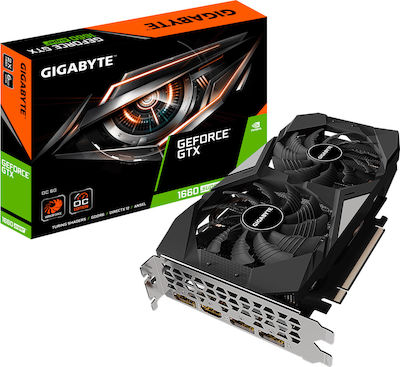
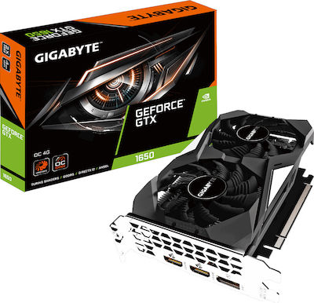

Graphics Cards
-

Gigabyte GeForce GTX 1660 6GB GDDR5 OC Κάρτα Γραφικών PCI-E x16 3.0 με HDMI και 3 DisplayPort
Product Code: 1
Price:272,12 € Rating: 4,8/5
View product
- Gigabyte GeForce GTX 1660 6GB OC βασίζεται στην αρχιτεκτονική NVIDIA Turing με ενσωματωμένη μνήμη 6GB GDDR5, ταχύτητα επεξεργαστή 1785MHz και σύστημα ψύξης Windforce 2X
-
MSI GeForce GTX 1660 Super 6GB GDDR6 Ventus XS OC Κάρτα Γραφικών PCI-E x16 3.0 με HDMI και 3 DisplayPort
Product Code: 2
Price:282,54 € Rating: 4,7/5
View product
- Mid-range κάρτα γραφικών με μνήμη 6GB DDR6, έως 1815Mhz ταχύτητα επεξεργαστή, τρεις θύρες DisplayPort και μία θύρα HDMI 2.0. Υποστηρίζει μέχρι τέσσερις οθόνες, διαθέτει G-Sync και η μέγιστη ανάλυση είναι 7680x4320.
Απαιτεί τροφοδοτικό 450W και το μήκος της φτάνει τα 247mm
-
MSI GeForce GTX 1660 Super 6GB GDDR6 Gaming X Κάρτα Γραφικών PCI-E x16 3.0 με HDMI και 3 DisplayPort
Product Code: 3
Price:345,00 € Rating: 4,9/5
View product
- Mid-range κάρτα γραφικών με μνήμη 6GB DDR6, έως 1830Mhz ταχύτητα επεξεργαστή, τρεις θύρες DisplayPort και μία θύρα HDMI 2.0.
Υποστηρίζει μέχρι τέσσερις οθόνες, διαθέτει G-Sync και η μέγιστη ανάλυση είναι 7680x4320.
Απαιτεί τροφοδοτικό 450W και το μήκος της φτάνει τα 247mm
-

Gigabyte GeForce GTX 1660 Super 6GB GDDR6 OC Κάρτα Γραφικών PCI-E x16 3.0 με HDMI και 3 DisplayPort
Product Code: 4
Price:336,00 € Rating: 4,8/5
View product
- Η Gigabyte GeForce GTX 1660 Super 6GB OC βασίζεται στην αρχιτεκτονική NVIDIA Turing με ενσωματωμένη μνήμη 6GB GDDR6, ταχύτητα επεξεργαστή 1785MHz και σύστημα ψύξης Windforce 2X.
-

Gigabyte GeForce GTX 1650 4GB GDDR5 OC Κάρτα Γραφικών PCI-E x16 3.0 με 2 HDMI και DisplayPort
Product Code: 5
Price:198,31 € Rating: 4,8/5
View product
- Υπερχρονισμένη έκδοση της κάρτας με μνήμη 4GB DDR5, έως 1710Mhz ταχύτητα επεξεργαστή, μία θύρα DisplayPort και 2 θύρες HDMI 2.0.
Υποστηρίζει PCI-E 3.0x16 και ταυτόχρονη μετάδοση μέχρι και τρεις οθόνες.
Διαθέτει G-Sync, DirectX 12 και η μέγιστη ανάλυση είναι 7680x4320. Απαιτεί τροφοδοτικό 300W και το μήκος της φτάνει τα 191mm
GO BACK TO CATEGORIES